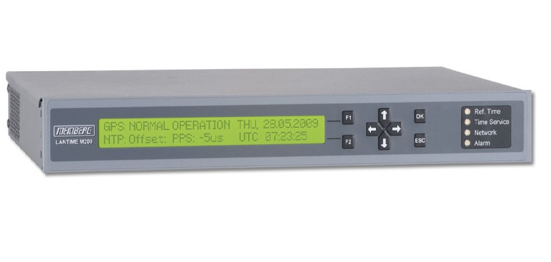

Серверы точного времени
Серверы точного времени Метроном с приемником ГЛОНАСС/GPS - это оборудование частотно-временной синхронизации клиентских устройств,
включенных в общую сеть. Обычно синхронизация осуществляется по сетевым протоколам NTP, PTP или с помощью сигналов IRIG, TOD,
NMEA. Ознакомтесь с памяткой по области применеия изделия Метроном здесь.
Сервер точного времени Метроном-200/GLN
Синхронизация времени в компактной платформе
Метроном-200/GLN компактный NTP сервер для малых и средних сетей. Этот сервер начального уровня включает один порт NTP, генратор TCXO и приемник ГЛОНАСС/GPS.
- приём сигналов ГЛОНАСС/GPS;
- 1 x NTP LAN Ethernet 10/100 RJ45;
- внутренний генератор TCXO;
- эл. питание ~220В.
Подробнее... Сервер точного времени / Устройство синхронизации частоты и времени Метроном-300/GLN
Синхронизация времени в компактной платформе
Метроном-200/GLN компактный NTP сервер для малых и средних сетей. Этот сервер начального уровня включает один порт NTP, генратор TCXO и приемник ГЛОНАСС/GPS.

- приём сигналов ГЛОНАСС/GPS;
- 2 x NTP LAN Ethernet 10/100 RJ45;
- внутренний генератор TCXO;
- 1 х 1PPS;
- 1 х 10МГц (TTL);
- 2 х RS232;
- эл. питание ~220В.
Подробнее... Устройство синхронизации частоты и времени Метроном-1000
Модульная структура, полное резервирование модулей, замена модулей без выключения электропитания.
Конфигурация на заказ.
- приём сигналов ГЛОНАСС/GPS;
- 8 слотов для модулей
- PTP LAN Ethernet 10/100 RJ45;
- NTP LAN Ethernet 10/100 RJ45;
- внутренний генератор;
- 1PPS, 1PPM, 10МГц, IRIG, RS232 и др.
- эл. питание ~220В.
Подробнее...
Устройство синхронизации частоты и времени Метроном-3000
Модульная структура, полное резервирование модулей, замена модулей без выключения электропитания.
Конфигурация на заказ.
- приём сигналов ГЛОНАСС/GPS;
- 18 слотов для модулей
- PTP LAN Ethernet 10/100 RJ45;
- NTP LAN Ethernet 10/100 RJ45;
- внутренний генератор;
- 1PPS, 1PPM, 10МГц, IRIG, RS232 и др.
- эл. питание ~220В.
Подробнее...